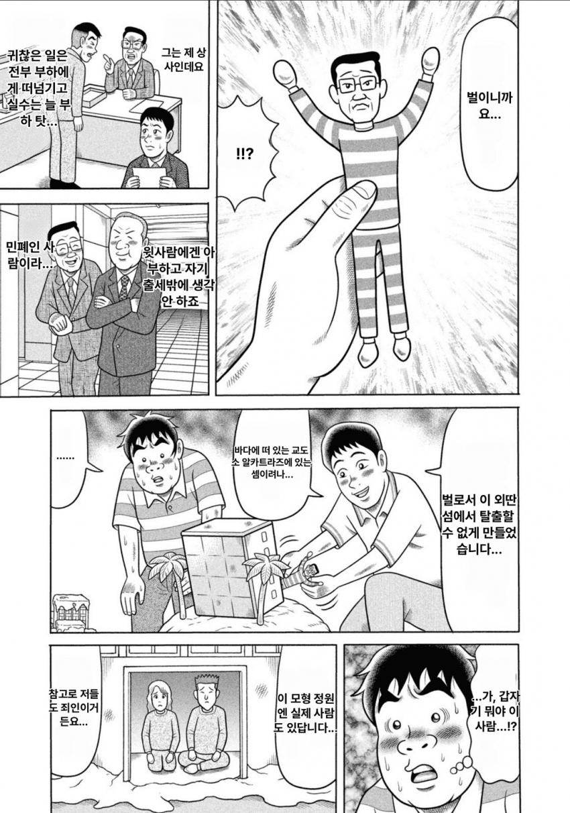
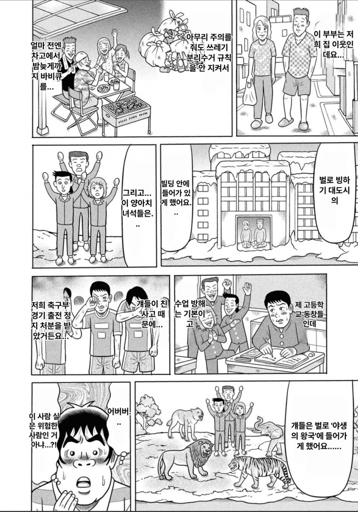

옆에서 인형 갖고 저러고 있는 거 보면 일이 생겼다 하고 바로 도망갈 거 같음


옆에서 인형 갖고 저러고 있는 거 보면 일이 생겼다 하고 바로 도망갈 거 같음
생긴게 미티작화마냥 불쾌함
미티는 작화 그 자체가 불쾌한골짜기.
볼 발그스레한거 존나불쾌
나중에 바늘로 인형들 콕콕 찌르겠다
응축된 광기의 총량을 예상할 수 없음
배틀물에 나오는 조작계 빌런같음
주인공 파티원 인형으로 만들어서 쿠히히히 하고
죠죠4부 서피스
서피스도 있는데 3부 아툼신 느낌이 더 나는거 같음 ㅋㅋㅋ
또 한국인 인형하나 추가되겠네...
언익셉터블!!! 하고 외칠꺼 같아
줄바꿈 왜 이따구냐 읽기힘들게
작가놈부터가 친구 하겐즈 훔쳐먹는 양아치...
진짜 광기를 만나니 어버버해버리는wwwwww
아툼신 ㄷㄷㄷ
친모아 피피엘이네
심즈 유저 평균인데?
스탠드 구현의 화살로 찌르면 100% 각성할 인재다
찐따력 MAX
난 이 만화 보기 불편해서 못 보겠더라.